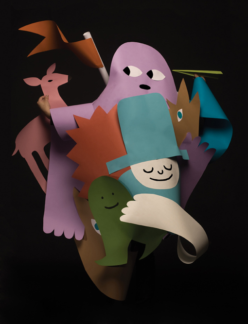
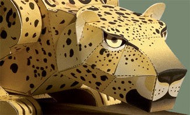
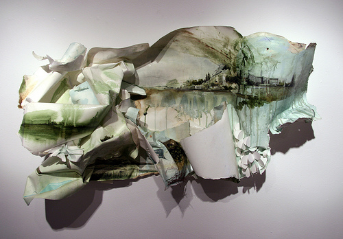
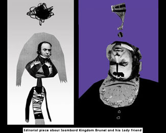
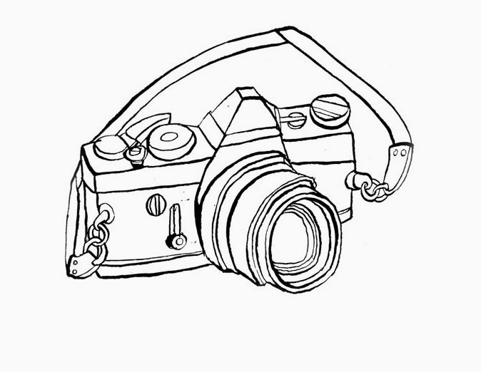
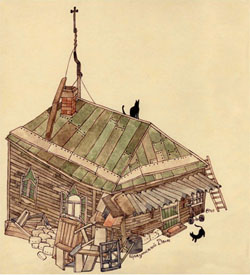
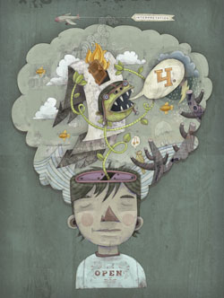
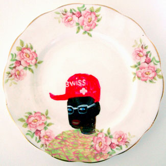

УМЕЛЫЕ РУКИ - 2
minimal techno
Несколько иллюстраций вдогонку предыдущему выпуску: коллеги поправляют, действительно шикарной бумагопластики на свете полно.


К слову о трендах, в этой же технике сделаны закрывающие титры к картине «Мадагаскар-2», так что это все-таки гребень волны.
Или вот, а?

И вот кому еще прекрасных коллажей:

И еще, выношу, что называется, из комментариев. Мне подсказывают, что технология должна быть функцией от творческой задачи и технического задания. Именно. «Должна». Мне кажется, это в большой степени проблема терминологическая. Технологию у нас путают со стилем, а стиль принято считать главным достоянием иллюстратора. На самом деле это его главный враг. Я про это говорил уже.
Как минимум он стопорит развитие, как максимум – банально портит рисунок (я сам, например, потерял годы чистым временем, скругляя (сейчас невозможно восстановить, зачем) каждое окончание линии и стыки между ними).
Строго говоря, то, что нынче принято называть стилем и с чем чуть ли не каждый иллюстратор носится, как с писаной торбой – суть единственная известная ему технология, связка проверенных ходов, которая позволяет ему быть уверенным в товарности продукта. Безопасный пятачок. Насколько выбор инструмента влияет на стиль – тема для отдельного разговора, но вкратце: очень влияет. Многие принимают за стиль специально настроенную в фотошопе кисточку. Многим даже не приходит в голову, что иллюстрация, отконтуренная вместо вектора пером, выглядит несравнимо богаче (и я сейчас молчу про пейнтер против масла).

И еще:

В наше время засилья суррогатов, общего дефицита реальных (без кавычек), тактильно осязаемых, настоящих вещей, рукоделие становится самостоятельной ценностью, а то чудом. Да, его легко подделать –

Но все вот эти игры с фактурками - только дешевый способ замаскировать мертвенную гладкость цифрового изображения.
Наигрались в новые технологии, хватит. Господа начинающие, хотите совет? Нас уже не спасти, а вы – постарайтесь обойтись без вакома. Хоть попробуйте. Любая попытка даст вам в руки лишний инструмент или (тоже полезное) знание о том, какой именно инструмент лучше не трогать.
Ваком, конечно, не более, чем инструмент, но настолько удобный (а местами и незаменимый), что все остальное просто вытесняет, особенно когда время становится деньгами. Но рукоделие / бумага / краски будут, будут отвоевывать себе место, и хотя совсем ваком / вектор, конечно, не выдавят, но заставят вакомщиков потесниться и, надеюсь, поменяться. Сейчас ваком - царь горы просто по отсутствию корпуса недетских иллюстраторов, на европейском уровне работающих цветным карандашом или акварелью.
Занимайте свободные места.

Разговор длинный, продолжение следует.